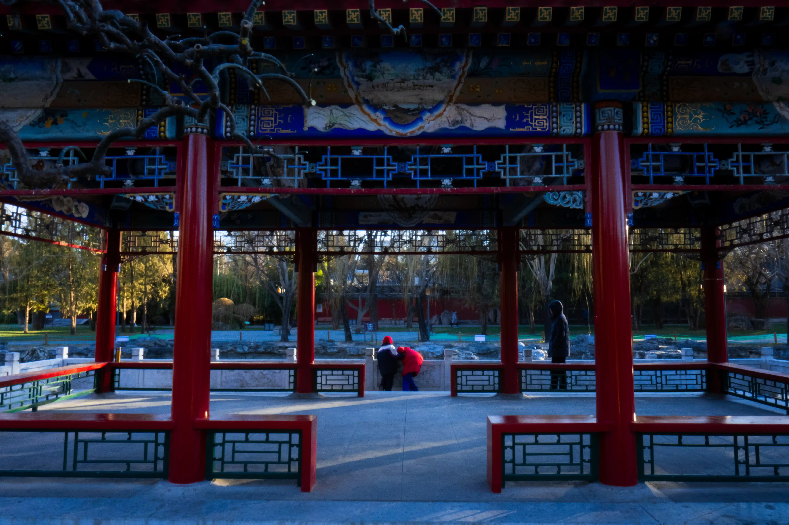
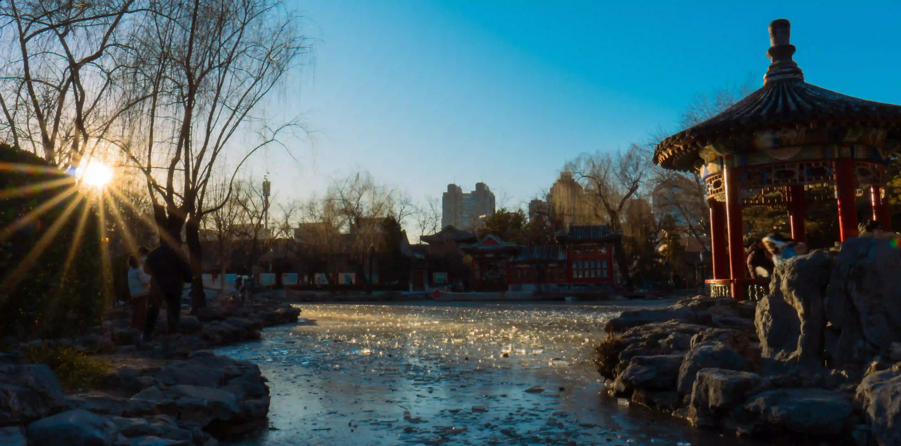
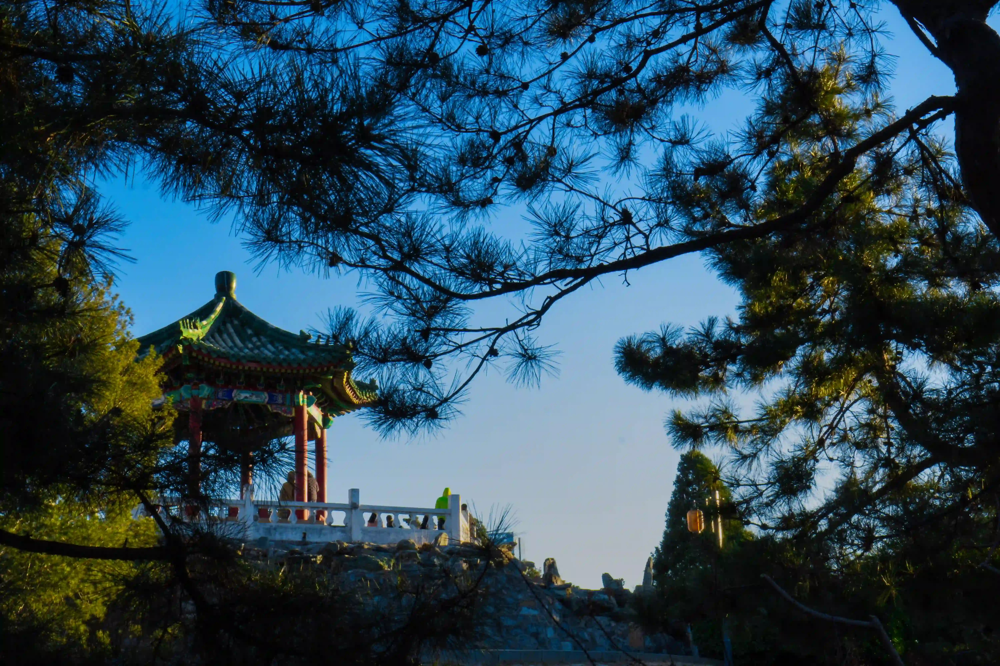
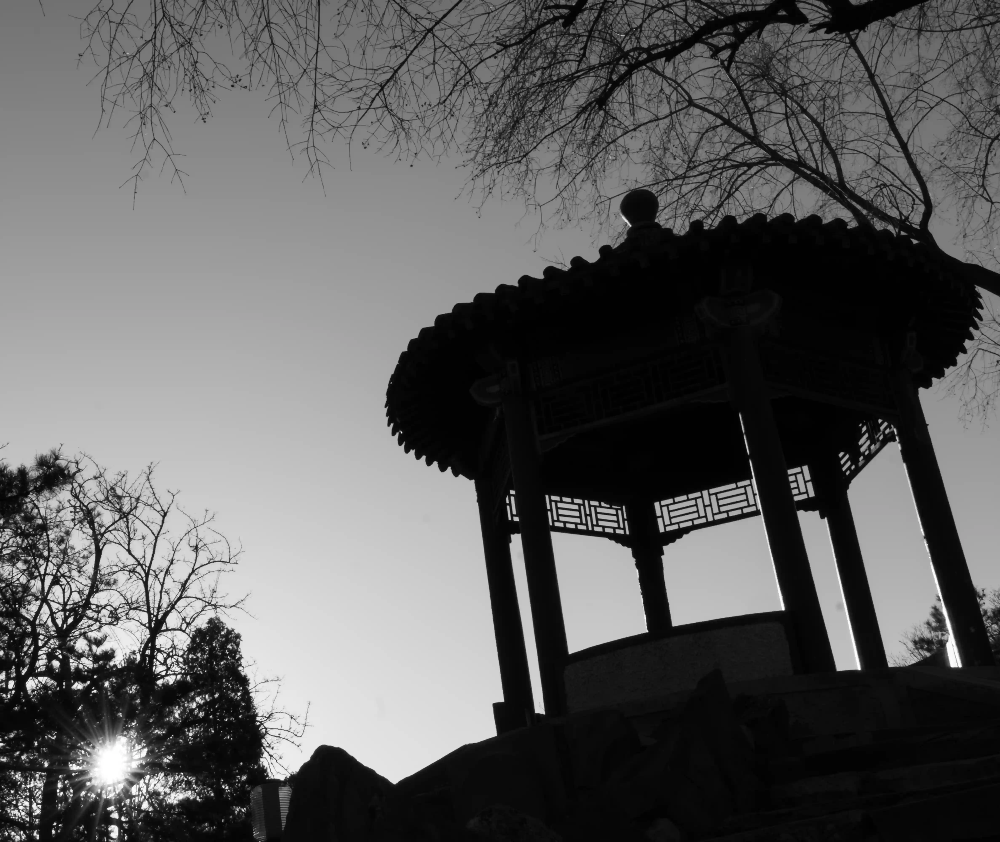
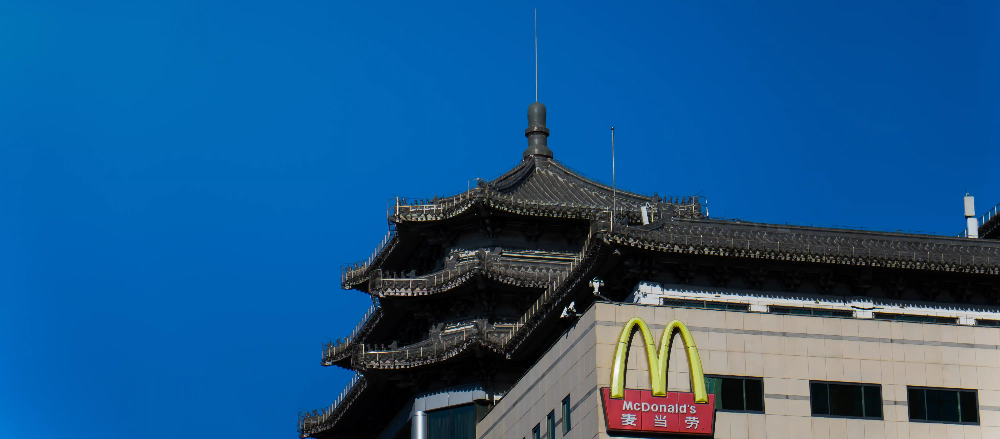
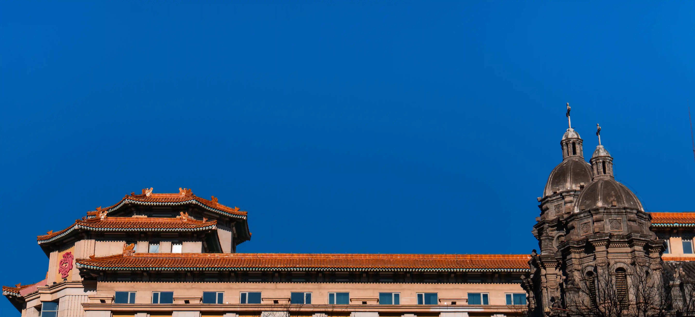
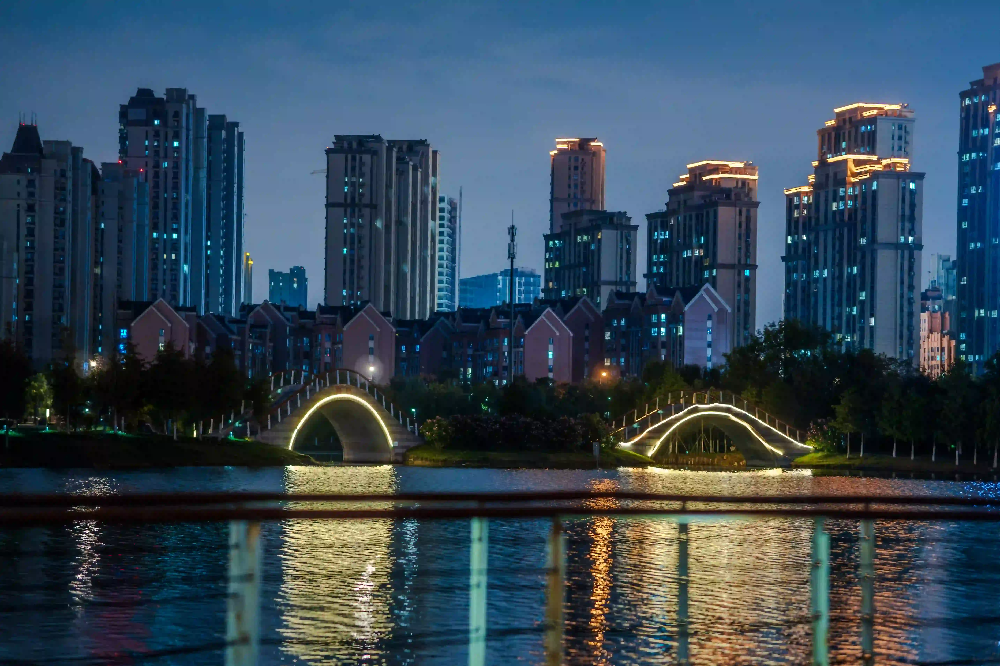

<article class="thumb">
    <a href="../PhotoAsset/images/fulls/PK8.webp" class="image"></a>
    <h2>2024.12 Peking</h2>
    <p>人流涌动的三里屯</p>
</article>
<!-- Add other articles here -->

<article class="thumb">
    <a href="../PhotoAsset/images/fulls/PK6.webp" class="image"></a>
    <h2>2024.12 Peking</h2>
    <p>You and Me</p>
</article>

<article class="thumb">
    <a href="../PhotoAsset/images/fulls/PK5.webp" class="image"></a>
    <h2>2024.12 Peking</h2>
    <p>Sunny Winter</p>
</article>

<article class="thumb">
    <a href="../PhotoAsset/images/fulls/PK4.webp" class="image"></a>
    <h2>2024.12 Peking</h2>
    <p>比较学院派</p>
</article>

<article class="thumb">
    <a href="../PhotoAsset/images/fulls/PK3.webp" class="image"></a>
    <h2>2024.12 Peking</h2>
    <p>ただ自分の怠惰な</p>
</article>

<article class="thumb">
    <a href="../PhotoAsset/images/fulls/PK2.webp" class="image"></a>
    <h2>2024.12 Peking</h2>
    <p>当天朝遇上灯塔</p>
</article>

<article class="thumb">
    <a href="../PhotoAsset/images/fulls/PK1.webp" class="image"></a>
    <h2>2024.12 Peking</h2>
    <p>当东方碰上西方</p>
</article>

<article class="thumb">
    <a href="../PhotoAsset/images/fulls/HM1.webp" class="image"></a>
    <h2>2024.10 Hefei</h2>
    <p>入夜的和睦湖，这张清楚证明了在晚上一个大光圈有多么重要</p>
</article>
<div class="pagination">
    <span>Page：</span>
    <div style="width: 20px;"></div> <!-- 添加一个占位符 -->
    {% assign total_pages = 4 %}
    <a href="{{ site.baseurl }}/photo1/">1</a>
    {% for page_num in (2..total_pages) %}
      <a href="{{ site.baseurl }}/photo{{ page_num }}/"> {{ page_num }}</a>
    {% endfor %}
  </div>